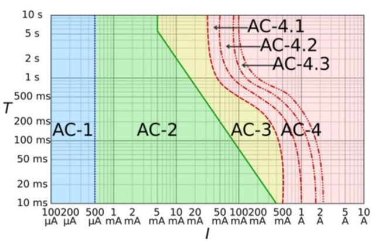

Guia em Instalações Elétricas Residenciais | Aula 10
Segurança e Efeitos Fisiológicos (Normas NBR IEC 60479-1, NBR 5410 e NR10)
1. O Choque Elétrico e a NBR IEC 60479-1
Segundo a norma técnica, a gravidade do choque não é determinada apenas pela tensão (V), mas pela Corrente Resultante (I = U/R) e pelo tempo em que ela circula pelo corpo.
Curva Tempo x Corrente (Zonas AC)

Zona AC-1: Até 0,5 mA. Limiar de percepção. Não causa reações musculares.
Zona AC-2: De 0,5 mA até curva b. Percepção clara e contrações involuntárias, geralmente sem danos orgânicos permanentes.
Zona AC-3: Entre curva b e c1. Risco de dificuldades respiratórias e contrações fortes (tetanização).
Zona AC-4: Além da curva c1. Probabilidade de fibrilação ventricular, parada cardíaca e queimaduras graves.
2. Desmistificando: 127V "Gruda" e 220V "Joga"?
Fisicamente, a eletricidade não possui propriedades de "atração" ou "repulsão". O que ocorre são fenômenos fisiológicos distintos baseados na intensidade da corrente:
O "Grudar" (Tetanização): Ocorre em intensidades médias (Zona AC-3). A corrente estimula os músculos flexores com mais força que os extensores, impedindo que a pessoa abra a mão para soltar o condutor.
O "Jogar" (Reação Muscular Brusca): Tensões maiores (como 220V ou superior) podem gerar uma corrente tão alta instantaneamente que a contração muscular é violenta o suficiente para projetar o corpo longe da fonte.
Nota Técnica: O perigo do "jogar" são os traumas secundários (quedas de escadas ou batidas de cabeça), enquanto o perigo do "grudar" é o tempo de exposição prolongado, que leva à fibrilação.
3. Tensão Extra Baixa (SELV e PELV)
A NBR 5410 define limites de tensão tão baixos que, mesmo em contato direto, a corrente resultante não atinge níveis perigosos (Zona AC-1).
Sistema
Descrição
Limite (CA)
SELV
Sistema de Extra Baixa Tensão de Segurança (isolado da terra).
≤ 50V
PELV
Sistema de Extra Baixa Tensão de Proteção (pode ser aterrado).
≤ 50V
4. Procedimentos de Segurança (NR10)
A NR10 estabelece que uma instalação só é considerada desenergizada após seguir esta sequência rigorosa:
Seccionamento: Abertura física do circuito (disjuntor ou chave).
Impedimento de Reenergização: Travamento com cadeados e etiquetas (LOTO - Lockout/Tagout).
Constatação da Ausência de Tensão: Teste real com voltímetro ou detector de tensão.
Instalação de Aterramento Temporário: Conectar as fases à terra para garantir segurança em caso de falha.
Sinalização: Delimitar a área de trabalho para evitar acesso de terceiros.
5. Canteiros de Obras e Riscos Ambientais
Canteiros são ambientes de altíssimo risco devido à umidade e presença de superfícies metálicas (que reduzem a resistência do corpo).
Uso Obrigatório de DR: Todo circuito de tomadas em obras deve possuir proteção Diferencial Residual.
Cabos Blindados: Utilizar cabos com proteção mecânica contra esmagamento por máquinas.
Quadros Blindados: Invólucros com IP (Grau de Proteção) adequado contra jatos de água e poeira.
6. Segurança no Lar e Proteção Adicional
O conceito moderno de segurança residencial foca em camadas de proteção:
Proteção contra Sobretensões (DPS): Protege equipamentos contra surtos de raios.
Dimensionamento Correto: Evita o aquecimento excessivo de cabos (Efeito Joule), prevenindo incêndios.
Manutenção de Contatos: Tomadas "frouxas" aumentam a resistência de contato, gerando pontos de ignição.
Cuidado com áreas molhadas: A pele úmida reduz a resistência do corpo de 100.000Ω para menos de 1.000Ω, aumentando a corrente do choque em até 100 vezes.
Pequenos detalhes evitam grandes tragédias domésticas:
Evite o "Efeito Cascata": Nunca utilize adaptadores (benjamins) para ligar vários aparelhos potentes na mesma tomada.
Isole os Cabos Danificados: Cabos ressecados ou descascados devem ser trocados, não apenas remendados.
Atualize Tomadas Antigas: Tomadas folgadas geram calor excessivo e risco de fogo.
Soquetes de Lâmpadas: Devem estar firmes. Soquetes soltos facilitam curtos-circuitos durante a troca.
Emendas Mal Feitas: São pontos de aquecimento e perda financeira na conta de luz.
Extensões Provisórias: Não devem ser usadas permanentemente por trás de móveis ou tapetes.
Cuidado com Áreas Úmidas: Jamais use aparelhos ligados à rede elétrica perto de pias ou banheiras.
Teste o seu DR: Aperte o botão "T" do DR mensalmente para garantir que o mecanismo está operante.
Limite das Tomadas: Use tomadas de 20A para aparelhos potentes (micro-ondas, airfryer).
Fique atento!: O olfato ajuda! Se sentir cheiro de plástico queimado vindo das paredes ou tomadas, desligue o disjuntor imediatamente. Esse é um sinal claro de sobrecarga ou mau contato (arco elétrico).
Dica de Ouro: O Dispositivo DR não é luxo, é lei! Ele é o único capaz de salvar vidas em caso de contato direto acidental, desligando o circuito antes que o coração entre em fibrilação, conforme as curvas da NBR IEC 60479-1.
7. Exercícios de Fixação
1. Segundo a NBR IEC 60479-1, qual o principal fator que define a gravidade de um choque elétrico?
2. Em qual zona da norma IEC 60479-1 o risco de fibrilação ventricular torna-se iminente?
3. Qual a função técnica do Dispositivo DR (30mA) baseada no gráfico de zonas?
4. O que caracteriza o fenômeno da "Tetanização"?
5. De acordo com a NR10, qual o passo final obrigatório para garantir a desenergização?